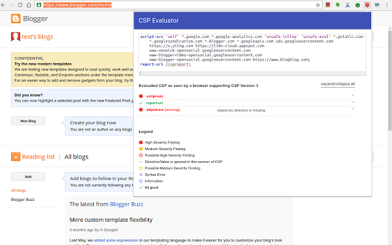
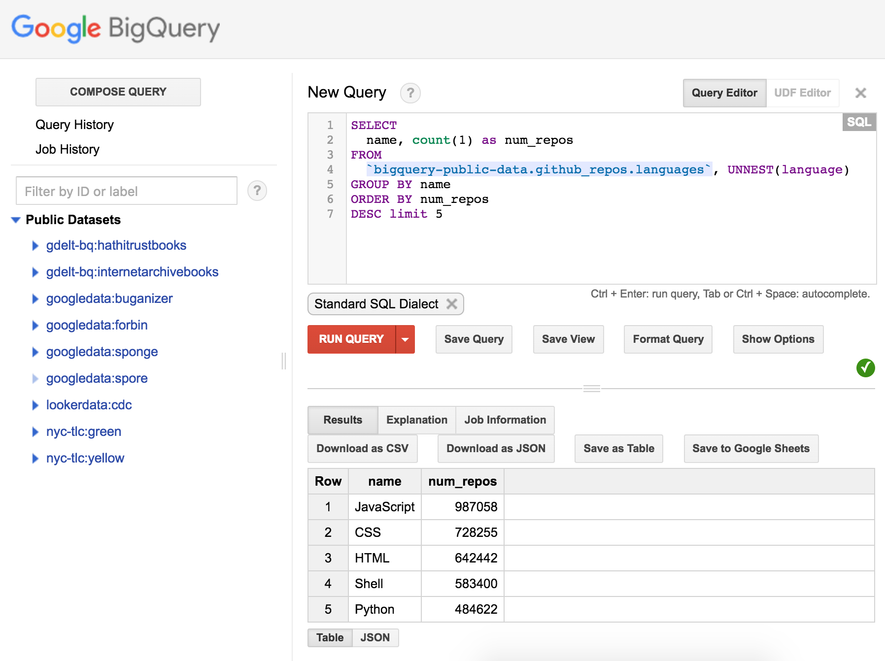

So if you are reading this, I assume you are already finding issues and have a fairly basic reconnaissance methodology. This section will focus on unusual and often left-out steps during your reconnaissance.
Content Security Policies (CSP) are commonly used to prevent client-side code injection from being exploitable. What many do not realise is that they are also a wealth of knowledge about the target and its dependencies. I suggest you start actively monitoring CSPs on targets in real time for any changes and potential (sub-)domain takeovers.
$ curl -I --silent http://example.com | grep Content-Security-Policy
$ curl -I --silent http://example.com | grep "script-src\|style-src"In addition to helping researchers "identify subtle bypasses which undermine" a CSP, the CSP Evaluator site (and associated Chrome extension can also be useful for at-a-glance policy review.
As described in "Broken Link Hijacking - How expired links can be exploited.", if a target is importing resources from an expired endpoint, you might be able to claim it and execute client-side script on the target's page. Use broken-link-checker and check the browser's console for errors.
$ blc -rfoi --filter-level 3 https://example.com/ | grep "Getting\|BROKEN"Google BigQuery can process large quantities of data extremely quickly. The official documentation includes a set of quickstart tutorials that can help you get up and running with basic data analysis tasks. This tool can easily be integrated to search the whole of GitHub's public code bases in a couple of minutes.
Yes, I am not kidding — purely hypothetical at this point — but why not try getting hold of physical products created by the target and seeing if you can extract valuable information?